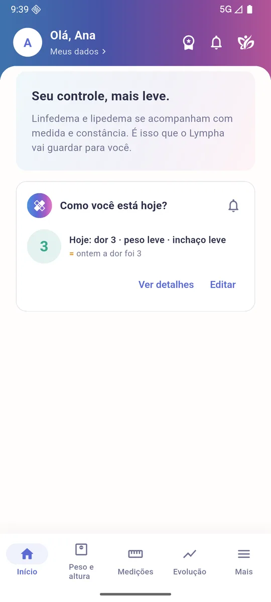
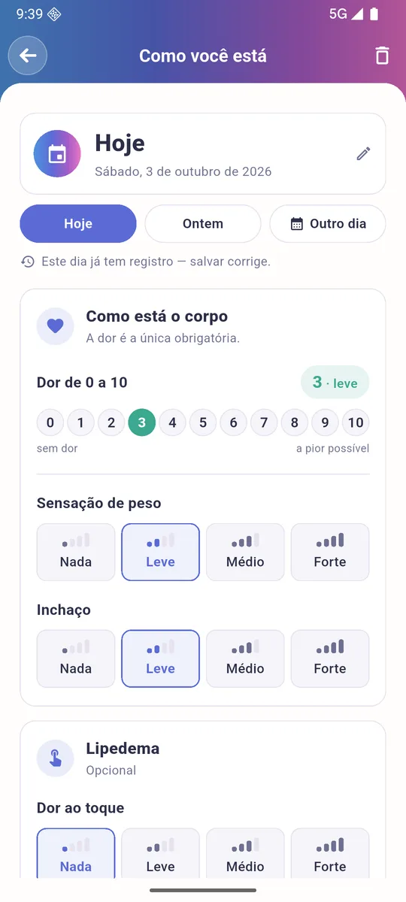
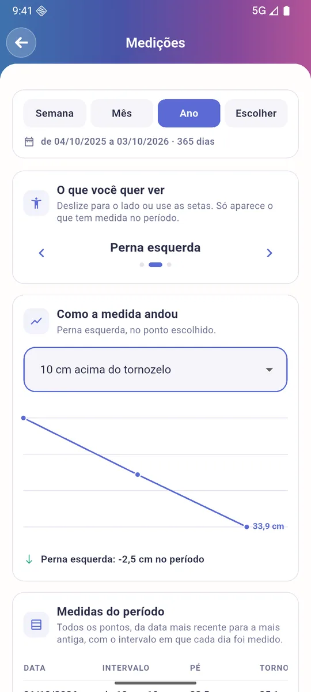
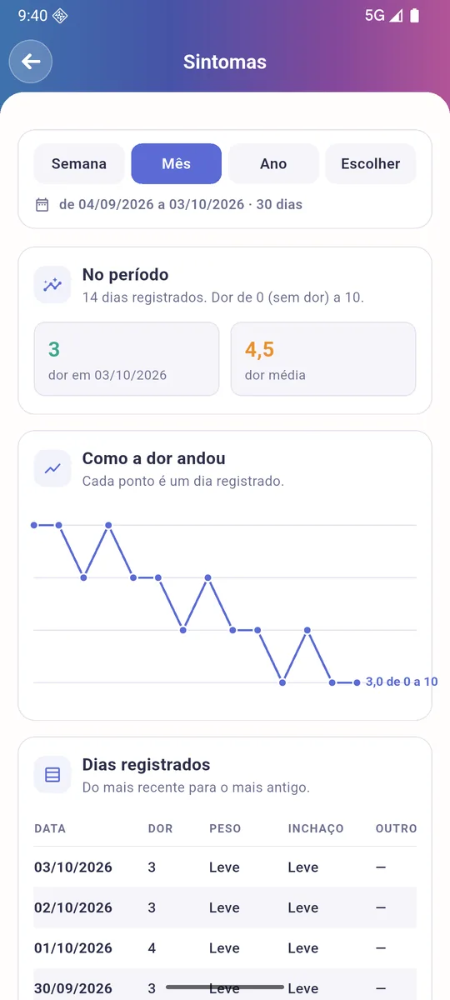
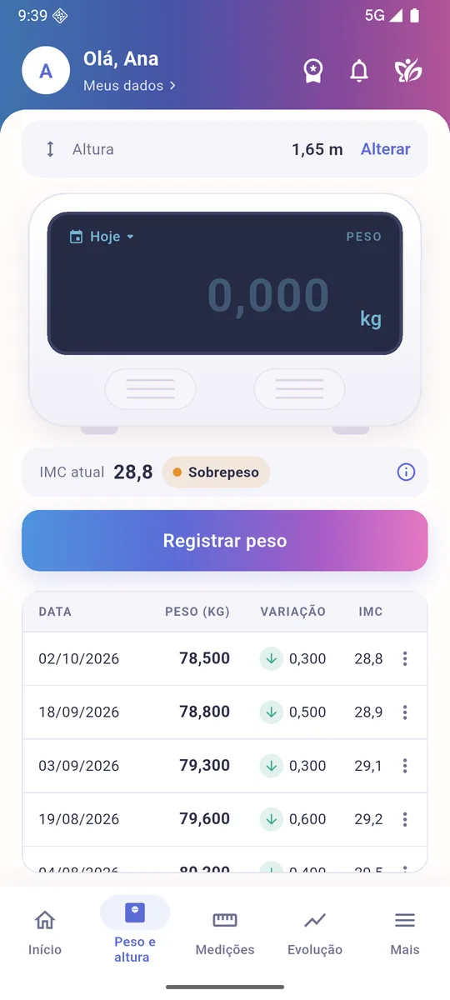
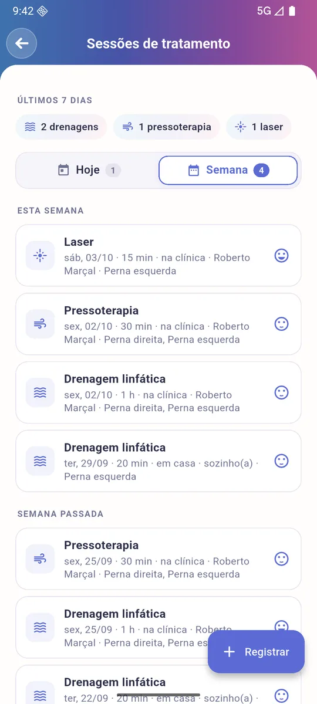
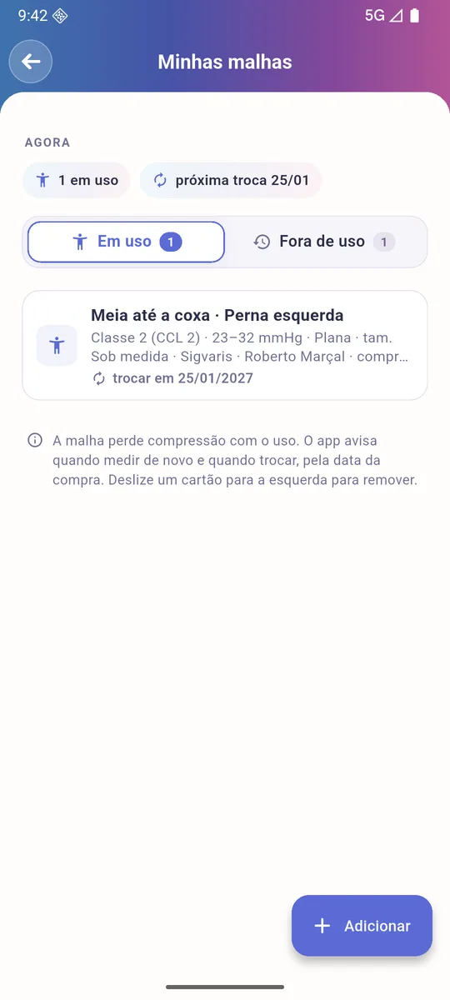
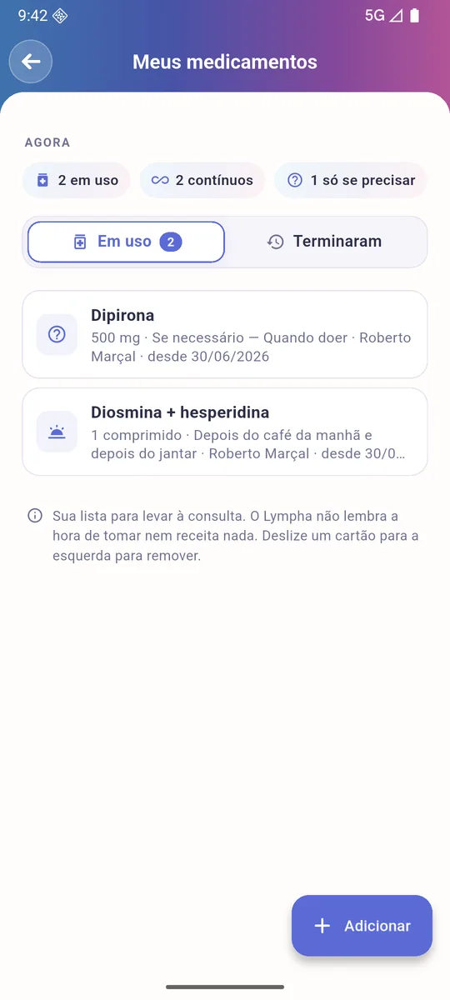

Seu controle, mais leve.
Medidas, peso, sintomas, sessões de drenagem, malhas, remédios e consultas num lugar só. E a sua evolução fica pronta para mostrar à equipe que cuida de você.
Grátis para começar. Android e iPhone.

Tratamento é constância. O Lympha guarda cada passo.
Linfedema e lipedema se acompanham com medida e constância. Anotar tudo no papel, no bloco de notas ou de cabeça não funciona, e é justamente isso que a equipe pergunta na consulta.
Para você
Registre em segundos como está o seu dia e veja, em gráficos, se o tratamento está fazendo diferença.
Para a sua equipe
Fisioterapeuta, angiologista, nutricionista: mande o relatório em PDF por e-mail, antes da consulta.
Com cuidado
Seus dados ficam protegidos e só são vistos por quem você escolher. O app não faz diagnóstico: você registra o que a equipe orientou.
Tudo do seu acompanhamento, num app só
Cada função foi pensada com quem vive o tratamento todos os dias.
Medições LIVRE
Perimetria ponto a ponto de braços e pernas, com o volume do membro e a comparação entre o lado direito e o esquerdo.
Peso e altura LIVRE
Pesagens com o IMC certo para a sua idade e a variação desde a última vez.
Como você está hoje? LIVRE
O diário de dor, peso e inchaço em poucos toques, com os sinais de cada diagnóstico e o aviso de possível erisipela.
Sessões de tratamento VIP
Drenagem, massagem, enfaixamento, pressoterapia, laser, exercício: registre o que fez, quanto tempo e como se sentiu.
Minhas malhas VIP
Cada malha com a compressão e a data da compra. O app avisa quando medir de novo e quando trocar, porque a malha perde compressão com o uso.
Meus medicamentos LIVRE
O que você toma, como toma e quem receitou. A resposta pronta para "o que você está tomando?".
Minhas consultas VIP
O calendário do que está marcado, com aviso no celular na véspera e no dia.
Planos da equipe VIP
O plano alimentar e o programa de exercícios que a equipe passou, com a sequência da autodrenagem, sempre à mão.
Evolução e relatórios LIVRE
Gráficos de peso, medidas e sintomas. No VIP, o ano inteiro e os relatórios em PDF enviados por e-mail à sua equipe.
Simples de usar, todos os dias
Algumas telas do app.







Comece de graça. Assine quando quiser mais.
O essencial para o dia a dia é livre, para sempre. O Lympha VIP acrescenta o acompanhamento completo do tratamento e os relatórios para a equipe.
Livre
Para registrar e ver a sua evolução.
- MediçõesPerimetria, volume e comparação direita × esquerda
- Peso e alturaCom o IMC certo para a idade
- Como você está hoje?Diário de sintomas e o alerta de erisipela
- Meu quadroDiagnóstico, estágio e episódios de erisipela
- Meus medicamentosO que toma, como e quem receitou
- Minha equipeQuem acompanha você, com o contato
- LembretesMalha, autodrenagem, pele e exercício, na hora que você escolher
- Evolução da semana e do mêsGráficos de peso, medidas e sintomas
Lympha VIP
Para acompanhar o tratamento inteiro, com a equipe.
Tudo do Livre, e mais:
- Sessões de tratamentoDrenagem, compressão, exercício e mais, sessão por sessão
- Minhas malhasO aviso de medir de novo e de trocar
- Minhas consultasCalendário com aviso no celular
- Programa de exercíciosE a sequência da autodrenagem
- Plano alimentarA dieta da equipe, refeição por refeição
- Sua evolução de mais longeO último ano, ou o período que você escolher
- Relatórios em PDF por e-mailPara a sua equipe, enviados sozinhos antes da consulta
A assinatura VIP é mensal ou anual, feita pela Google Play ou pela App Store, e pode ser cancelada quando quiser.
Baixe o Lympha
Aponte a câmera do celular para o QR code do seu aparelho. Se já estiver no celular, é só tocar nele.
O app está chegando às lojas. Enquanto isso, o QR leva ao aviso de quando ficará disponível.